<!DOCTYPE html>
<html>
<head><meta name="generator" content="Hexo 3.8.0">
  <meta charset="utf-8">
  
  <title>磐石</title>
  <meta name="viewport" content="width=device-width, initial-scale=1, maximum-scale=1">
  <meta name="description" content="danielding&apos;s blog | java | bi">
<meta property="og:type" content="website">
<meta property="og:title" content="磐石">
<meta property="og:url" content="https://danieldingzju.github.io/index.html">
<meta property="og:site_name" content="磐石">
<meta property="og:description" content="danielding&apos;s blog | java | bi">
<meta property="og:locale" content="zh-CN">
<meta name="twitter:card" content="summary">
<meta name="twitter:title" content="磐石">
<meta name="twitter:description" content="danielding&apos;s blog | java | bi">
  
    <link rel="alternative" href="/atom.xml" title="磐石" type="application/atom+xml">
  
  
    <link rel="icon" href="/favicon.png">
  
  <link rel="stylesheet" href="/css/style.css">
  <link href="//fonts.useso.com/css?family=Source+Code+Pro" rel="stylesheet" type="text/css">
  <!--[if lt IE 9]><script src="//cdnjs.cloudflare.com/ajax/libs/html5shiv/3.7/html5shiv.min.js"></script><![endif]-->
  
</head></html>
<body>
<div id="container">
  <div id="wrap">
    <header id="header">
  <div id="banner"></div>
  <div id="header-outer" class="outer">
    <div id="header-title" class="inner">
      <h1 id="logo-wrap">
        <a href="/" id="logo">磐石</a>
      </h1>
      
        <h2 id="subtitle-wrap">
          <a href="/" id="subtitle">工程狮</a>
        </h2>
      
    </div>
    <div id="header-inner" class="inner">
      <nav id="main-nav">
        <a id="main-nav-toggle" class="nav-icon"></a>
        
          <a class="main-nav-link" href="/">Home</a>
        
          <a class="main-nav-link" href="/archives">Archives</a>
        
      </nav>
      <nav id="sub-nav">
        
          <a id="nav-rss-link" class="nav-icon" href="/atom.xml" title="RSS Feed"></a>
        
        <a id="nav-search-btn" class="nav-icon" title="Search"></a>
      </nav>
      <div id="search-form-wrap">
        <form action="http://www.baidu.com/baidu" method="get" accept-charset="utf-8" class="search-form">
          <input type="search" name="word" maxlength="20" class="search-form-input" placeholder="Search">
          <input type="submit" value="" class="search-form-submit">
          <input name="tn" type="hidden" value="bds">
          <input name="cl" type="hidden" value="3">
          <input name="ct" type="hidden" value="2097152">
          <input type="hidden" name="si" value="danieldingzju.github.io">
        </form>
      </div>
    </div>
  </div>
</header>
    <div class="outer">
      <section id="main">
  
    <article id="post-LinkageError-排查过程" class="article article-type-post" itemscope="" itemprop="blogPost">
  <div class="article-meta">
    <a href="/2019/02/02/LinkageError-排查过程/" class="article-date">
  <time datetime="2019-02-02T08:56:40.000Z" itemprop="datePublished">2月 2 2019</time>
</a>
    
  </div>
  <div class="article-inner">
    
    
      <header class="article-header">
        
  
    <h1 itemprop="name">
      <a class="article-title" href="/2019/02/02/LinkageError-排查过程/">LinkageError 排查过程</a>
    </h1>
  

      </header>
    
    <div class="article-entry" itemprop="articleBody">
      
        <h3 id="问题">问题</h3><p>在部署loan-lending的分支进行测试进件的时候，发现了如下的报错：<br>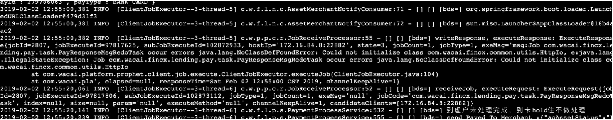</p>
<h3 id="分析过程">分析过程</h3><ol>
<li>看着就像是ClassLoader找不到对应的类；但是这个类就是此应用的class文件，还不是引入的二，三方包，奇怪。</li>
<li>在本地和k2上面都打印了对应的classLoader，看起来也都比较正常。3</li>
<li><p>在本地重启，关闭了一些干扰功能和日志（特别是consumer），好好观察了下日志，发现每次出现问题之前一定会有一次这个错误：<br></p>
</li>
<li><p>这个问题看着就像是包冲突了，那么解决netty的包冲突，去掉所有其他的netty包，留下了一个版本，然后重启，再次测试没有问题了！！</p>
</li>
</ol>
<h3 id="推测">推测</h3><p>JVM在运行时加载类A的时候，如果类A的static 区域发送了LinkageError，那么这个A也会发生LinkageError。所以<strong>第一次报错是static区域中具体的LinkageError信息</strong>，<strong>第二次以及以后的报错都是A相关的LinkageError</strong>；如果是在线上不断的有日志打印，还有很多其他的混淆信息，很难发现<strong>有且仅有一次</strong>的报错；（因为正常排查逻辑都会去关注报错量较大的信息）。</p>
<h3 id="实验证明">实验证明</h3><ol>
<li><p>自己起了项目，在HttpIo中增加如下代码：<br></p>
</li>
<li><p>testBean 嵌套 testBean2，<br><br></p>
</li>
<li>最外层的测试用例用反射调用testBean的test方法<br></li>
<li>用这个模拟了真实应用中prophetclient相关的调用过程，最终调用看如下日志：<br><h3 id="最终结论">最终结论</h3>最终推测成立：<br>&gt;<br>JVM在运行时加载类A的时候，如果类A的static 区域发送了LinkageError，那么这个A也会发生LinkageError。所以<strong>第一次报错是static区域中具体的LinkageError信息</strong>，<strong>第二次以及以后的报错都是A相关的LinkageError</strong>； </li>
</ol>

      
    </div>
    <footer class="article-footer">
      
        <a data-url="https://danieldingzju.github.io/2019/02/02/LinkageError-排查过程/" data-id="cjrzyxtcw0009s7buvfxtzhg3" class="article-share-link" data-share="baidu" data-title="LinkageError 排查过程">分享到</a>
      

      

      
  <ul class="article-tag-list"><li class="article-tag-list-item"><a class="article-tag-list-link" href="/tags/Java/">Java</a></li></ul>

    </footer>
  </div>
  
</article>


  
    <article id="post-Metaspace-OOM" class="article article-type-post" itemscope="" itemprop="blogPost">
  <div class="article-meta">
    <a href="/2017/12/11/Metaspace-OOM/" class="article-date">
  <time datetime="2017-12-11T08:30:00.000Z" itemprop="datePublished">12月 11 2017</time>
</a>
    
  </div>
  <div class="article-inner">
    
    
      <header class="article-header">
        
  
    <h1 itemprop="name">
      <a class="article-title" href="/2017/12/11/Metaspace-OOM/">fastjson引发的oom事件</a>
    </h1>
  

      </header>
    
    <div class="article-entry" itemprop="articleBody">
      
        <h3 id="问题描述">问题描述</h3><p>12月1日的时候 风控系统 线上出现 metaspace OOM</p>
<hr>
<h3 id="排查过程">排查过程</h3><ul>
<li><p>查询了背景资料：hotspot 1.8 里面有了metaspace，且修改自定义classloader相关的class的回收机制。当自定义classloader被标记为可以回收的时候，相关的class才能被全部回收。</p>
</li>
<li><p>由于 风控系统 使用了字节码生成动态class技术，所以初步判定为自定义classloader造成了内存泄漏。</p>
</li>
<li><p>因为出现oom的情况下，java的vm参数设置的好，很容易就dump出heap，然后进行分析 </p>
</li>
<li><p>放到MAT使用 list object with incoming reference：<br>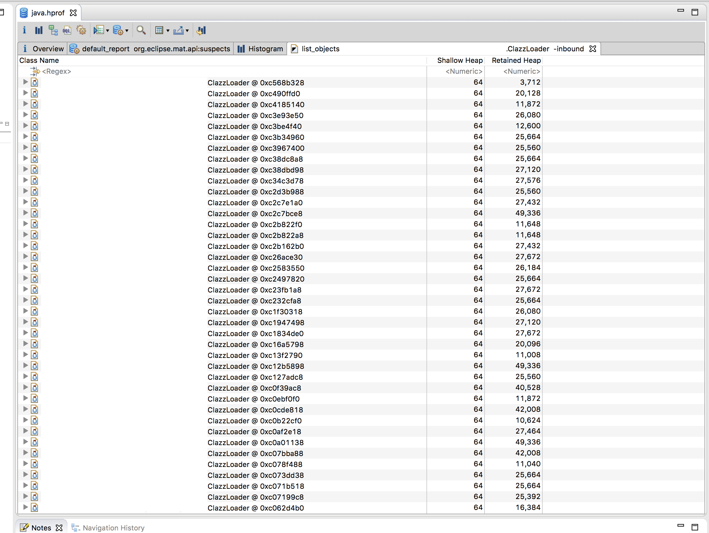<br>明确可以看到有很多的ClazzLoader对象。</p>
</li>
<li><p>找到任意一个实例，去掉weak，soft，phantom类型的reference，留下的如下：<br>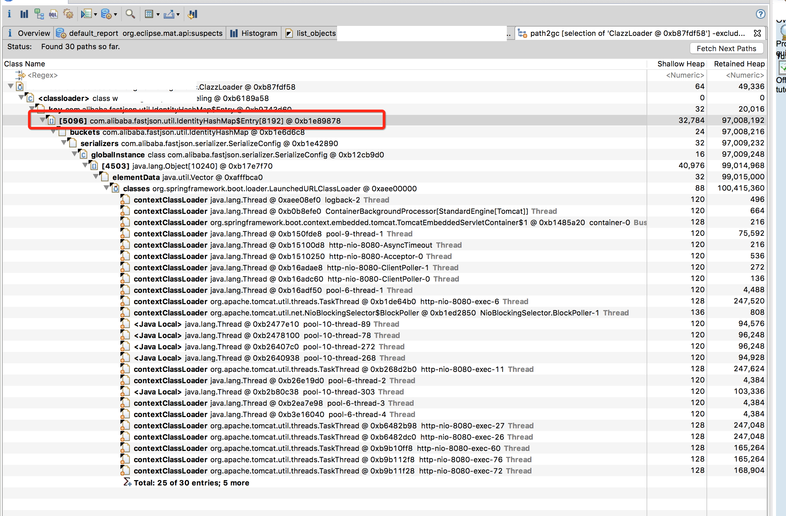<br>判断为fastjson 引起的内存泄漏。</p>
</li>
<li><p>翻看代码查看哪里fastjson使用了func中的clazz对象：<br><br>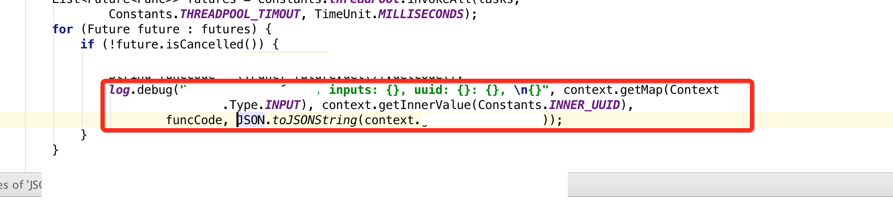</p>
</li>
<li><p>竟然是Func执行成功的情况下的 debug的日志 导致了这个问题，虽然这个日志并没有打印出来（debug级别），但是java执行的时候在这里没有lazy的处理。 很巧合的引起了这个问题。</p>
</li>
</ul>
<hr>
<h3 id="验证复现问题：">验证复现问题：</h3><h4 id="使用fastjson的情况：">使用fastjson的情况：</h4><p>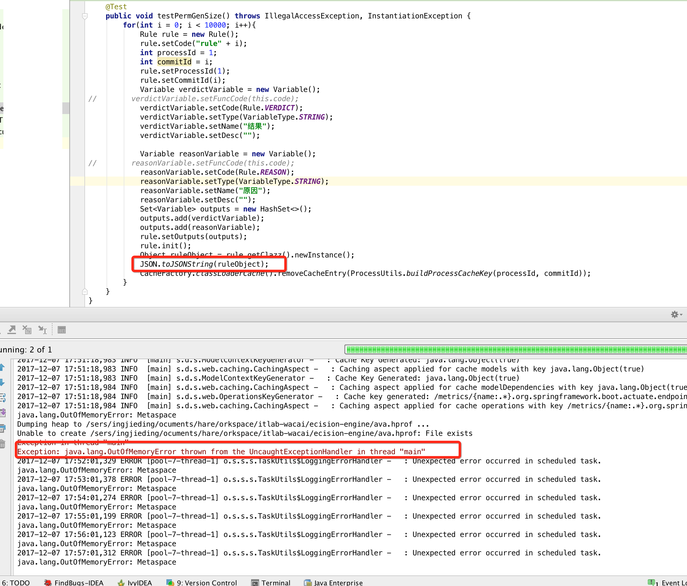</p>
<ul>
<li>通过分析heap可以发现相同的现象：<br>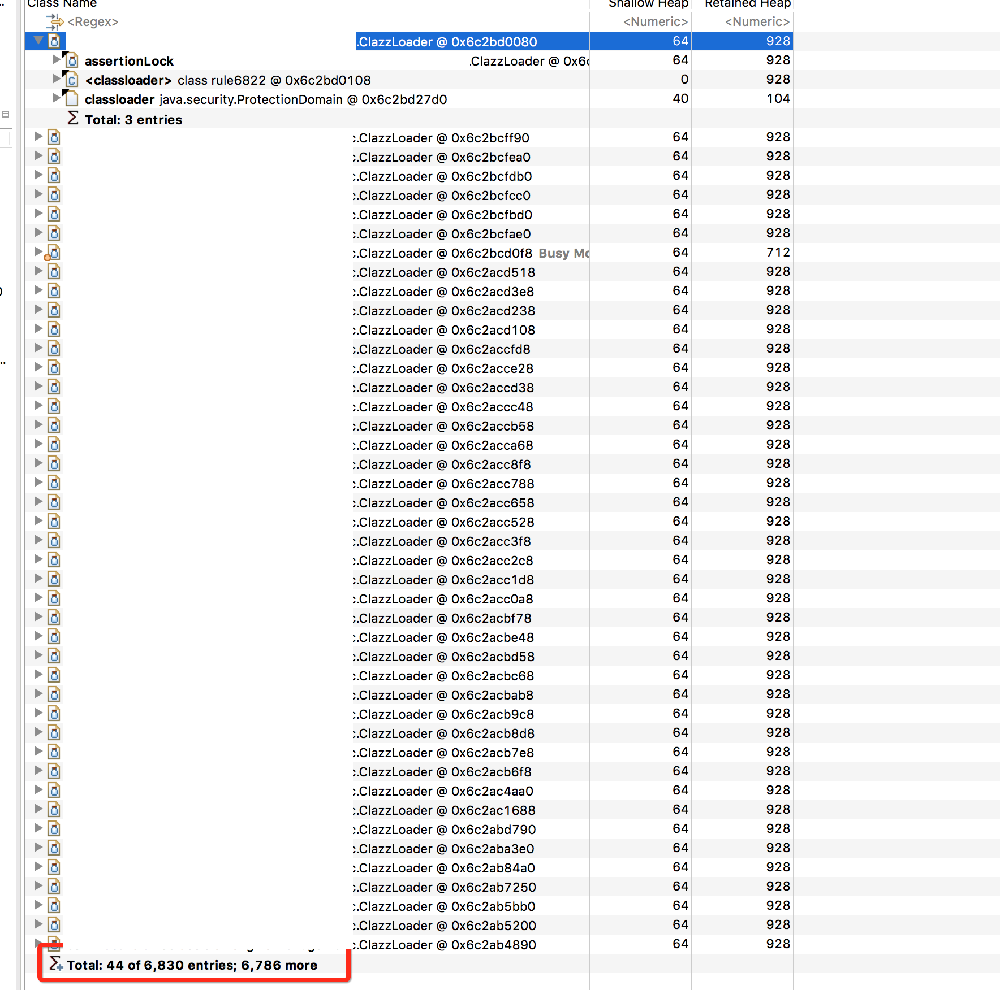<br>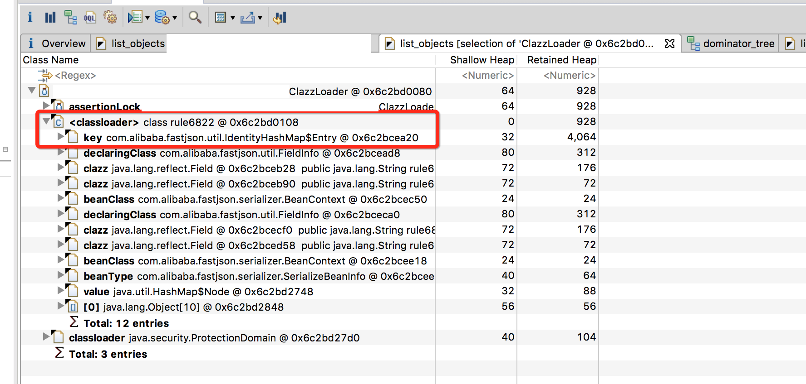<br>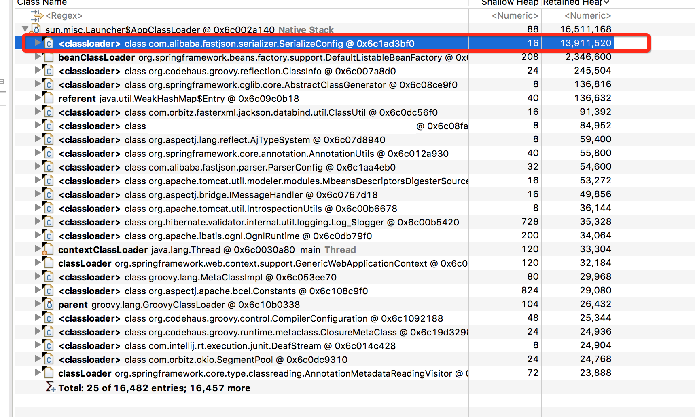</li>
</ul>
<h4 id="不使用fastjson的情况：">不使用fastjson的情况：</h4><p>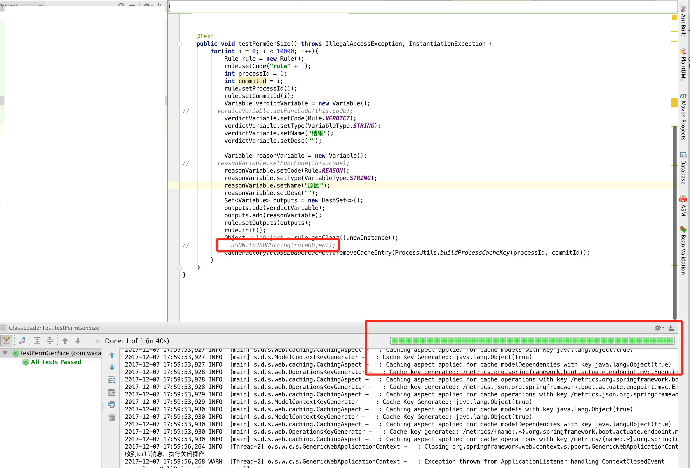</p>
<hr>
<h3 id="结论">结论</h3><p>fastjson这个库对动态class文件的序列化是存在风险的。</p>

      
    </div>
    <footer class="article-footer">
      
        <a data-url="https://danieldingzju.github.io/2017/12/11/Metaspace-OOM/" data-id="cjrzyxtcu0006s7bud3nzhzor" class="article-share-link" data-share="baidu" data-title="fastjson引发的oom事件">分享到</a>
      

      

      
  <ul class="article-tag-list"><li class="article-tag-list-item"><a class="article-tag-list-link" href="/tags/Java/">Java</a></li></ul>

    </footer>
  </div>
  
</article>


  
    <article id="post-hdfs-case-one" class="article article-type-post" itemscope="" itemprop="blogPost">
  <div class="article-meta">
    <a href="/2016/12/09/hdfs-case-one/" class="article-date">
  <time datetime="2016-12-09T08:42:17.000Z" itemprop="datePublished">12月 9 2016</time>
</a>
    
  </div>
  <div class="article-inner">
    
    
      <header class="article-header">
        
  
    <h1 itemprop="name">
      <a class="article-title" href="/2016/12/09/hdfs-case-one/">hdfs-case-one</a>
    </h1>
  

      </header>
    
    <div class="article-entry" itemprop="articleBody">
      
        <h2 id="hdfs_decommition_的时候同时开启balancer的问题">hdfs decommition 的时候同时开启balancer的问题</h2><p>这次机房迁移发现 机器长久处于decommition in prograss 的状态:<br>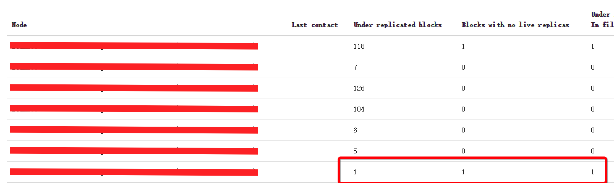</p>
<p>但是overview里面Number of Under-Replicated Blocks = 0。</p>
<p>老机房机器日志如下：<br>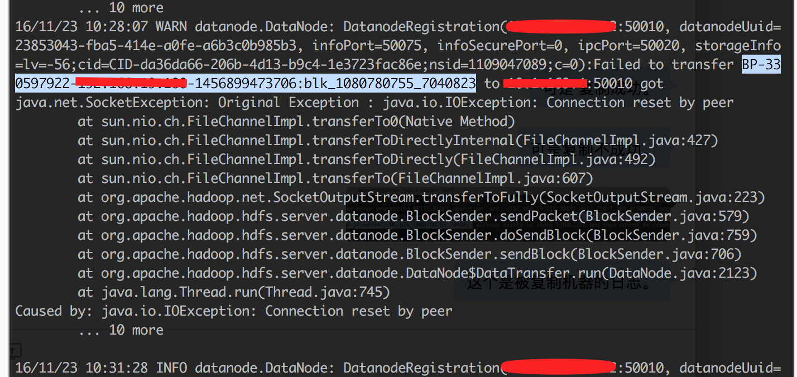</p>
<p>新机房机器日志如下：<br>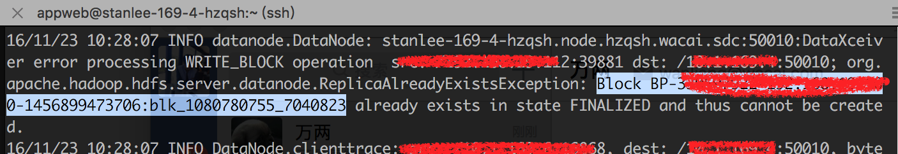</p>
<p>搜了一些资料：<br>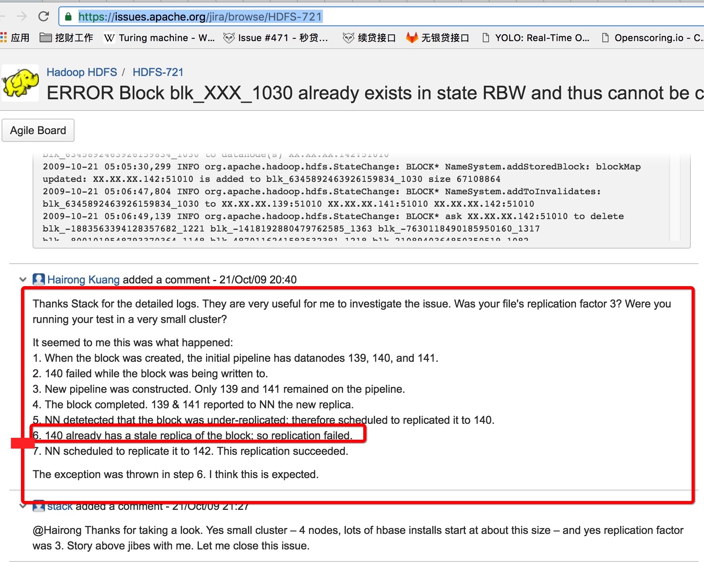</p>
<p>结合balancer的日志：<br>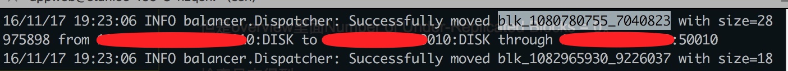</p>
<p>判断是本机在decommissioning过程中只参考了本机的块是否复制成功，没有从全局去考虑(已经被balancer拷贝过了)。</p>
<p>估计也没人在decommisioning的过程中开启balancer的, 所以这些decommissioning in progress的机器上的datanode直接kill掉了，不影响使用，不丢失数据。</p>

      
    </div>
    <footer class="article-footer">
      
        <a data-url="https://danieldingzju.github.io/2016/12/09/hdfs-case-one/" data-id="cjrzyxtd1000gs7bul87be74g" class="article-share-link" data-share="baidu" data-title="hdfs-case-one">分享到</a>
      

      

      
  <ul class="article-tag-list"><li class="article-tag-list-item"><a class="article-tag-list-link" href="/tags/problem/">problem</a></li></ul>

    </footer>
  </div>
  
</article>


  
    <article id="post-zeppelin-case-one" class="article article-type-post" itemscope="" itemprop="blogPost">
  <div class="article-meta">
    <a href="/2016/12/09/zeppelin-case-one/" class="article-date">
  <time datetime="2016-12-09T08:18:43.000Z" itemprop="datePublished">12月 9 2016</time>
</a>
    
  </div>
  <div class="article-inner">
    
    
      <header class="article-header">
        
  
    <h1 itemprop="name">
      <a class="article-title" href="/2016/12/09/zeppelin-case-one/">zeppelin-case-one</a>
    </h1>
  

      </header>
    
    <div class="article-entry" itemprop="articleBody">
      
        <p>最近频繁发现 zeppelin刷新页面无法展示页面，从前端看是websocket一直hold。</p>
<hr>
<h3 id="现场">现场</h3><p>2016-12-09 下午2点半左右重现。</p>
<ul>
<li><p>重启zeppelin的时候发现 NIO Exception：too many file 问题提示，但是还是能够正常使用zeppelin。</p>
</li>
<li><p>在系统中执行命令有如下提示：</p>
<p>  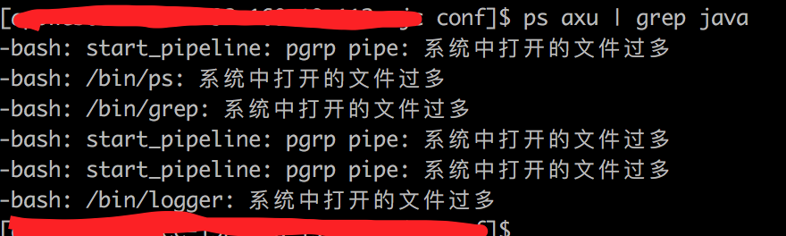</p>
</li>
</ul>
<hr>
<h3 id="排查过程">排查过程</h3><ol>
<li><p>猜测是zeppelin相关进程开启文件过多，zeppelin-server，zeppelin-interpriter对应的进程hold的文件数量如下：</p>
<p> 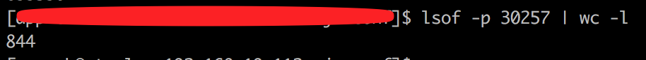</p>
<p> 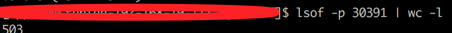</p>
</li>
<li><p>猜测是操作系统层面问题，找到系统日志如下：</p>
<p> 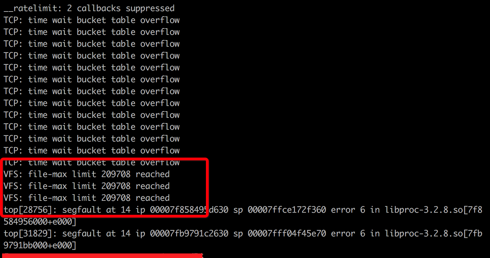</p>
</li>
<li><p>经@万两 回忆 VFS 跟zeppelin的配置有关，zeppelin.notebook.storage 使用的类和VFS有关，默认类如下：</p>
<p> 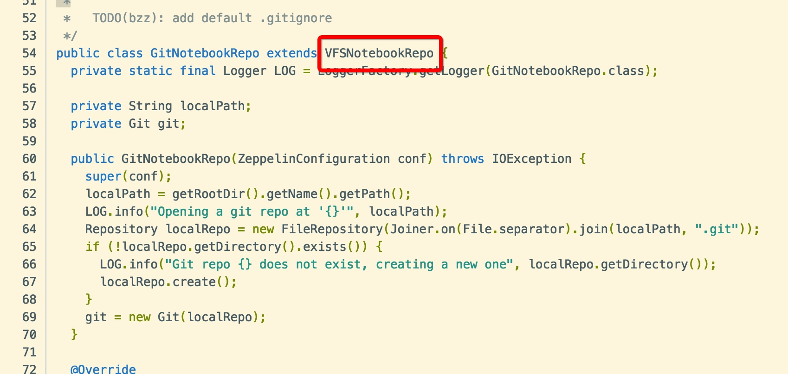</p>
<p> 然后之前定制过一个这个repo类，自动进行commit notebook。</p>
</li>
<li><p>经@金砖猜测git文件太多。然后查看了<code>.git</code>，果然，objects文件夹有500+M。</p>
</li>
<li><p>定位完成，回滚到默认配置，删除<code>.git</code>文件夹。</p>
</li>
</ol>
<hr>
<h3 id="总结，衍生">总结，衍生</h3><p>案例结束了。那么衍生一下：</p>
<p>查看本机当前用户的具柄数量用： <code>ulimit -u</code> 为：<code>257395</code><br>查看本机最大文件数量：<code>cat /proc/sys/fs/file-max</code> 为：<code>209708</code></p>
<p>具柄和 最大文件数量怎么不匹配呢？</p>
<p>据资料表明： <code>file-max</code>是系统所有进程总和能够有的最大的文件数量；而<code>ulimit -u</code> 是对单个用户限制的最大文件数量。</p>
<p>所以这个系统的这两个参数配置也是有问题的。</p>

      
    </div>
    <footer class="article-footer">
      
        <a data-url="https://danieldingzju.github.io/2016/12/09/zeppelin-case-one/" data-id="cjrzyxtd3000js7butbqh6czd" class="article-share-link" data-share="baidu" data-title="zeppelin-case-one">分享到</a>
      

      

      
  <ul class="article-tag-list"><li class="article-tag-list-item"><a class="article-tag-list-link" href="/tags/problem/">problem</a></li></ul>

    </footer>
  </div>
  
</article>


  
    <article id="post-hacking-phoenix" class="article article-type-post" itemscope="" itemprop="blogPost">
  <div class="article-meta">
    <a href="/2016/09/27/hacking-phoenix/" class="article-date">
  <time datetime="2016-09-27T11:51:50.000Z" itemprop="datePublished">9月 27 2016</time>
</a>
    
  </div>
  <div class="article-inner">
    
    
      <header class="article-header">
        
  
    <h1 itemprop="name">
      <a class="article-title" href="/2016/09/27/hacking-phoenix/">hacking phoenix</a>
    </h1>
  

      </header>
    
    <div class="article-entry" itemprop="articleBody">
      
        <p>因为微服务使用了springboot，并且用使用了phoenix 来读写Hbase，应用经常超过1000的线程数量。</p>
<hr>
<h4 id="分析_stack：">分析 stack：</h4><p>自己管理了400个线程的线程池，phoenix-1-thread 有128个，HConnection的线程有256个，再加上一些tomcat的http线程，轻松就能到1000个线程。</p>
<p>略多，希望把phoenix和HConnection相关线程干掉。官方文档没有提到怎么设置，网上也没有资料。</p>
<p>那么，看源码吧。</p>
<hr>
<h4 id="解剖代码：">解剖代码：</h4><ol>
<li><p>JobManager 创建了 <code>phoenix-{index}-thread</code> ，JobManager 初始化是由<code>QueryServicesImpl</code>完成的(使用了<code>QueryServicesOptions</code>)</p>
<p> 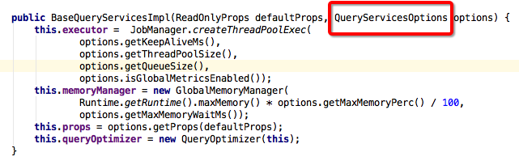</p>
</li>
<li><p>JobManager.JobCallable 被 <code>ServerCacheClient</code> 使用。</p>
</li>
<li>ServerCacheClient 被 <code>MutationState</code>的方法<code>send(Iterator&lt;TableRef&gt; tableRefIterator)</code> 使用。</li>
<li>MutationState 被 <code>PhoenixConnection</code>的方法<code>commit()</code>使用。</li>
</ol>
<p>恩，到这里，逻辑已经串联起来了。</p>
<hr>
<h4 id="分析问题：">分析问题：</h4><p>PhoenixDriver 获取 connection 的时候可以使用方法 <code>Connection connect(String url, Properties info)</code>, info 按理是我们的自定义配置，但是实际却不能生效。<a href="https://phoenix.apache.org/tuning.html" target="_blank" rel="noopener">配置项参考</a></p>
<p>但是我们发现 PhoenixDriver.getQueryServices() 创建了 QueryServicesImpl</p>
<ol>
<li>PhoenixEmbeddedDriver 定义了函数 <code>abstract public QueryServices getQueryServices() throws SQLException;</code> 参数列表竟然是空的！</li>
<li><code>QueryServicesImpl</code>使用了一个默认的参数配置！</li>
</ol>
<p>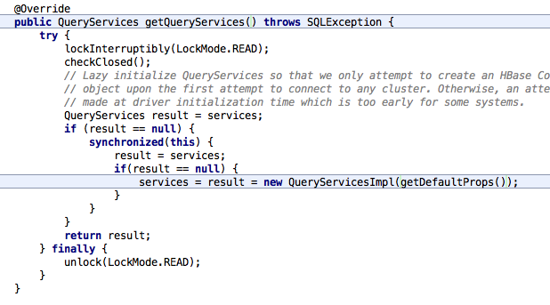</p>
<hr>
<h4 id="第一次尝试：">第一次尝试：</h4><p>所以修改 <code>PhoenixEmbeddedDriver</code> 定义 ， <code>PhoenixDriver</code> 的实现：</p>
<ol>
<li><p>PhoenixEmbeddedDriver</p>
<pre><code><span class="keyword">abstract</span> <span class="keyword">public</span> <span class="function">QueryServices <span class="title">getQueryServices</span><span class="params">(Properties properties)</span> <span class="keyword">throws</span> SQLException</span>;
</code></pre></li>
<li><p>PhoenixDriver</p>
<pre><code>@<span class="type">Override</span>
public <span class="type">QueryServices</span> getQueryServices(<span class="type">Properties</span> properties) throws <span class="type">SQLException</span> {
    <span class="keyword">try</span> {
        lockInterruptibly(<span class="type">LockMode</span>.<span class="type">READ</span>);
        checkClosed();
        // <span class="type">Lazy</span> initialize <span class="type">QueryServices</span> so that we only attempt to create an <span class="type">HBase</span> <span class="type">Configuration</span>
        // <span class="keyword">object</span> upon the first attempt to connect to <span class="type">any</span> cluster. <span class="type">Otherwise</span>, an attempt will be
        // made at driver initialization time which <span class="keyword">is</span> too early <span class="keyword">for</span> some systems.
        <span class="type">QueryServices</span> <span class="literal">result</span> = services;
        <span class="keyword">if</span> (<span class="literal">result</span> == null) {
            synchronized(this) {
                   <span class="literal">result</span> = services;
                <span class="keyword">if</span>(<span class="literal">result</span> == null) {
                    services = <span class="literal">result</span> = new <span class="type">QueryServicesImpl</span>( getDefaultProps().addAll(properties) );
                }
            }
        }
        <span class="keyword">return</span> <span class="literal">result</span>;
    } <span class="keyword">finally</span> {
        unlock(<span class="type">LockMode</span>.<span class="type">READ</span>);
    }
}
</code></pre></li>
</ol>
<p>恩，到目前为止，自定义的参数能够传进去了。这个时候我实验了下，还是没有设置成功！</p>
<hr>
<h4 id="第二次尝试：">第二次尝试：</h4><p>继续看QueryServicesImpl是怎么处理我们传进去的自定义的 配置的。竟然是这样的：</p>
<pre><code><span class="function"><span class="title">super</span><span class="params">(defaultProps, QueryServicesOptions.withDefaults()</span></span>)
</code></pre><p>QueryServiceOptions也是默认的。传入的defaultProps啥用都没有。ok，我们改造下：</p>
<pre><code>super<span class="comment">(defaultProps, QueryServicesOptions.withDefaults()</span>.setAll<span class="comment">(defaultProps)</span>);
</code></pre><p>这下看起来对了，在实验下，还是没有成功！这个坑真深。再看下setAll方法，看到<code>ReadOnlyProps</code>对象。发现内部包了<code>props</code>，<code>overrideProps</code>。 同时<code>isEmpty</code>，<code>asMap</code>和<code>iterator</code>实现的时候都只考虑到了<code>props</code>, 但是我们可以看到<code>getRaw</code>方法其实把两个map都考虑到了，我姑且认为实现这个类的人，忘记了修正<code>asMap</code>，<code>iterator</code>和<code>isEmpty</code>，那么我们自己来修改吧，实现好的如下：</p>
<pre><code>public <span class="type">Map</span>&lt;<span class="type">String</span>,<span class="type">String</span>&gt; asMap() {
    <span class="type">Map</span>&lt;<span class="type">String</span>, <span class="type">String</span>&gt; mergedMap = new <span class="type">HashMap</span>&lt;<span class="type">String</span>, <span class="type">String</span>&gt;();
    mergedMap.putAll(props);
    mergedMap.putAll(overrideProps);
    <span class="keyword">return</span> mergedMap;
}

@<span class="type">Override</span>
public <span class="type">Iterator</span>&lt;<span class="type">Entry</span>&lt;<span class="type">String</span>, <span class="type">String</span>&gt;&gt; <span class="keyword">iterator</span>() {
    <span class="keyword">return</span> this.asMap().entrySet().<span class="keyword">iterator</span>();
}

public boolean isEmpty() {
    <span class="keyword">return</span> props.isEmpty() &amp;&amp; overrideProps.isEmpty();
}
</code></pre><p>好的，再实验一下，终于好了～～～～～</p>
<p>可配置参数请参考<code>QueryServices</code>，附带使用方式：</p>
<pre><code><span class="keyword">Properties</span> properties = new <span class="keyword">Properties</span>();
properties.setProperty(QueryServices.THREAD_POOL_SIZE_ATTRIB, <span class="string">"32"</span>);
conn = DriverManager.getConnection(phoenixUrl, properties);
</code></pre><p>那么现在也修改下HConnection的连接数。</p>
<p>HConnection是由HConnectionFactory创建，实际也是用了HConnectionManager。</p>
<p>一路跟下去，可以看到ConnectionManager管理了一个pool，通过getBatchPool可以看到参数有：</p>
<pre><code>hbase<span class="class">.hconnection</span><span class="class">.threads</span><span class="class">.max</span>
hbase<span class="class">.hconnection</span><span class="class">.threads</span><span class="class">.core</span>
</code></pre><p>默认都是256。</p>
<p>好，那我们修改下，都改成 128：</p>
<pre><code>properties.setProperty(QueryServices.HCONNECTION_POOL_CORE_SIZE, <span class="string">"128"</span>);
properties.setProperty(QueryServices.HCONNECTION_POOL_MAX_SIZE, <span class="string">"128"</span>);
</code></pre><p>最后都搞定了！</p>
<hr>
<p>回过头来，既然已经解决问题了，就了解了下这两个线程池都是干嘛用的。</p>
<ol>
<li><p>phoenix-1-thread 用来：</p>
<p> 缓存了HTable 和 HRegionLocation 的关系， Callable 任务是 thrift 的RPC调用。</p>
</li>
<li><p>HConnection 线程池用来：</p>
<p> 缓存复用，减少创建开销。</p>
</li>
</ol>

      
    </div>
    <footer class="article-footer">
      
        <a data-url="https://danieldingzju.github.io/2016/09/27/hacking-phoenix/" data-id="cjrzyxtcy000bs7buxg6x68ml" class="article-share-link" data-share="baidu" data-title="hacking phoenix">分享到</a>
      

      

      
  <ul class="article-tag-list"><li class="article-tag-list-item"><a class="article-tag-list-link" href="/tags/Java/">Java</a></li></ul>

    </footer>
  </div>
  
</article>


  
    <article id="post-性能优化-ClassLoader" class="article article-type-post" itemscope="" itemprop="blogPost">
  <div class="article-meta">
    <a href="/2016/02/19/性能优化-ClassLoader/" class="article-date">
  <time datetime="2016-02-19T02:02:51.000Z" itemprop="datePublished">2月 19 2016</time>
</a>
    
  </div>
  <div class="article-inner">
    
    
      <header class="article-header">
        
  
    <h1 itemprop="name">
      <a class="article-title" href="/2016/02/19/性能优化-ClassLoader/">hacking fastjson</a>
    </h1>
  

      </header>
    
    <div class="article-entry" itemprop="articleBody">
      
        <p>使用 java agent 横向收集一些日志，在上线老应用servicemanager的时候，cpu和load飙升。</p>
<h4 id="第一次尝试">第一次尝试</h4><p>先用了这个脚本跑了下获取cpu最高的几个线程对应的jstack（此脚本适用于由固定生命周期长的线程引起的cpu飙升）：</p>
<pre><code><span class="shebang">#!/bin/bash
</span>
JAVA_HOME=<span class="string">"/opt/taobao/java"</span>
PID=$(<span class="variable">${JAVA_HOME}</span>/bin/jps | grep <span class="string">"Bootstrap"</span> | cut <span class="operator">-d</span> <span class="string">" "</span> <span class="operator">-f</span>1)
tmp_dir=<span class="string">"/tmp/java_<span class="variable">${PID}</span>"</span>
tmp_file=<span class="string">"java_<span class="variable">${PID}</span>_trace.log"</span>
threads_file=<span class="string">"threads_<span class="variable">${PID}</span>_trace.log"</span>
stack_file=<span class="string">"stack_<span class="variable">${PID}</span>_trace.log"</span>

<span class="keyword">if</span> [ <span class="operator">-d</span> <span class="string">"<span class="variable">${tmp_dir}</span>"</span> ]; <span class="keyword">then</span>
        rm -r <span class="variable">${tmp_dir}</span>
<span class="keyword">fi</span>

mkdir <span class="variable">${tmp_dir}</span>
<span class="built_in">cd</span> <span class="variable">${tmp_dir}</span>

<span class="keyword">if</span> [ <span class="operator">-f</span> <span class="string">"<span class="variable">${stack_file}</span>"</span> ]; <span class="keyword">then</span>
        rm <span class="variable">${stack_file}</span>
<span class="keyword">fi</span>

touch <span class="variable">${stack_file}</span>

<span class="variable">${JAVA_HOME}</span>/bin/jstack <span class="variable">${PID}</span> &gt; <span class="variable">${tmp_file}</span>

ps H -eo user,pid,ppid,tid,time,%cpu --sort=%cpu --no-headers \
        | tail -<span class="number">10</span> \
        | awk -v <span class="string">"pid=<span class="variable">${PID}</span>"</span> <span class="string">'$2==pid{print $4"\t"$6}'</span> &gt; <span class="variable">${threads_file}</span>

<span class="keyword">for</span> index <span class="keyword">in</span> $( seq <span class="number">1</span> <span class="number">10</span> )
<span class="keyword">do</span>
        line=$(cat <span class="variable">${threads_file}</span> | sed -n <span class="string">"<span class="variable">${index}</span>, <span class="variable">${index}</span>p"</span>)
        nid=$(<span class="built_in">echo</span> <span class="string">"<span class="variable">${line}</span>"</span>|awk <span class="string">'{printf("0x%x",$1)}'</span>)
        cpu=$(<span class="built_in">echo</span> <span class="string">"<span class="variable">${line}</span>"</span>|awk <span class="string">'{print $2}'</span>)
        awk -v <span class="string">"cpu=<span class="variable">${cpu}</span>"</span> <span class="string">'/nid='</span><span class="string">"<span class="variable">${nid}</span>"</span><span class="string">'/,/^$/{print $0"\t"(isF+    +?"":"cpu="cpu"%");}'</span> <span class="variable">${tmp_file}</span> &gt;&gt; <span class="variable">${stack_file}</span>
<span class="keyword">done</span>
</code></pre><p>发现从top 10的cpu占用的栈信息上面看不出来啥。应该不满足  <strong>固定生命周期长线程</strong>  前提。</p>
<h4 id="第二次尝试">第二次尝试</h4><p>用 @沉思 所写的oncrash脚本收集所有的信息，脚本如下：</p>
<pre><code><span class="keyword">mkdir</span> dumpdir
<span class="keyword">cd</span> dumpdir
echo '
#!/bin/bash

<span class="keyword">if</span> [ <span class="string">"x${JAVA_HOME}" == "x"</span> ]
then
        JAVA_HOME=<span class="string">"/opt/taobao/java"</span>
fi

NOW=$(date '+%Y%<span class="keyword">m</span>%<span class="keyword">d</span>-%<span class="keyword">H</span>%<span class="keyword">M</span>%S')
PID=$(<span class="label">${JAVA_HOME}</span>/bin/jps -<span class="keyword">l</span> | grep 'org.apache.catalina.startup.<span class="keyword">Bootstrap</span>' | cut -<span class="keyword">d</span> <span class="string">" "</span> -f1)

echo <span class="string">"JAVA_HOME=${JAVA_HOME}"</span>
echo <span class="string">"PID=${PID}"</span>
echo

echo <span class="string">"jstack"</span>
<span class="label">${JAVA_HOME}</span>/bin/jstack <span class="label">${PID}</span> &gt; <span class="keyword">stack</span>.<span class="label">${NOW}</span>

echo <span class="string">"histo"</span>
<span class="label">${JAVA_HOME}</span>/bin/jmap -histo <span class="label">${PID}</span> &gt; histo.<span class="label">${NOW}</span>

echo <span class="string">"ps -Tel"</span>
ps -Tel &gt; ps.<span class="label">${NOW}</span>

echo <span class="string">"top -c -M"</span>
top -c -<span class="keyword">M</span> -n3  &gt; top.<span class="label">${NOW}</span>

echo <span class="string">"top -H -p -c -M"</span>
top -<span class="keyword">H</span> -p <span class="label">${PID}</span> -c -<span class="keyword">M</span> -n3 &gt; top-java.<span class="label">${NOW}</span>

echo <span class="string">"who"</span>
w &gt; w.<span class="label">${NOW}</span>

echo <span class="string">"vmstat 1 10"</span>
vmstat 1 10 &gt; vmstat.<span class="label">${NOW}</span>

echo <span class="string">"ps aux"</span>
ps -aux &gt; psaux.<span class="label">${NOW}</span>

echo <span class="string">"free"</span>
free -<span class="keyword">m</span> &gt; free.<span class="label">${NOW}</span>

echo <span class="string">"netstat"</span>
netstat -apn &gt; netstat.<span class="label">${NOW}</span>

echo <span class="string">"jstat -gcutil"</span>
<span class="label">${JAVA_HOME}</span>/bin/jstat -gcutil <span class="label">${PID}</span> &gt; jstat-gcutil.<span class="label">${NOW}</span>

echo <span class="string">"jstat -gc 1000 5"</span>
<span class="label">${JAVA_HOME}</span>/bin/jstat -gc <span class="label">${PID}</span> 1000 5 &gt; jstat-gc.<span class="label">${NOW}</span>

echo <span class="string">"lsof"</span>
lsof -p <span class="label">${PID}</span> &gt; lsof.<span class="label">${NOW}</span>

echo <span class="string">"sar -n Sock"</span>
sar -<span class="keyword">n</span> SOCK &gt; sarnsock.<span class="label">${NOW}</span>

echo <span class="string">"sar -n DEV"</span>
sar -<span class="keyword">n</span> DEV &gt;sarndev.<span class="label">${NOW}</span>

echo <span class="string">"sar -b"</span>
sar -b &gt; sarb.<span class="label">${NOW}</span>

echo <span class="string">"iostat 1 5"</span>
iostat -k 1 5 &gt; iostat.<span class="label">${NOW}</span>

echo <span class="string">"jmapdump"</span>
<span class="label">${JAVA_HOME}</span>/bin/jmap -dump:<span class="keyword">format</span>=b,<span class="keyword">file</span>=jmapdump.<span class="label">${NOW}</span>.bin <span class="label">${PID}</span>

' &gt; ./call.<span class="keyword">sh</span>
bash ./call.<span class="keyword">sh</span>
<span class="keyword">rm</span> ./call.<span class="keyword">sh</span>
<span class="keyword">cd</span> -
echo
</code></pre><p>获得栈信息如下：<br>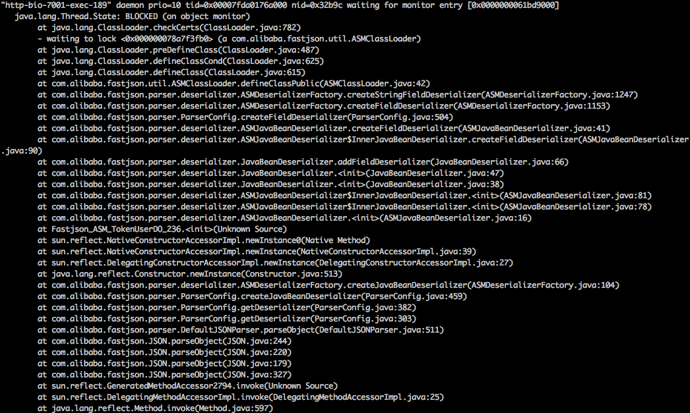</p>
<p>然后翻翻代码意识到了JDK6 ClassLoader里面使用了大量的<strong>synchronized</strong>。</p>
<p>主要性能问题来源于两个原因：</p>
<ol>
<li><p>代码中没有对Class和Method做cache，多个线程同时执行load某个类的时候就会有并发问题。</p>
</li>
<li><p>json string的数据量大，所依赖的fastjson的方法 JSON.parseObject(String text, Class&lt;?&gt; class) 使用了asm修改了客户端自定义的pojo类，然后调用了defineClass来加载字节码，从stack中可以看到checkCerts也是有锁的。</p>
</li>
</ol>
<p>最后cache所有使用到的Class和Method；去掉了fastjson的依赖，手动解析json；解决了问题。</p>

      
    </div>
    <footer class="article-footer">
      
        <a data-url="https://danieldingzju.github.io/2016/02/19/性能优化-ClassLoader/" data-id="cjrzyxtd6000qs7bupz9yjuhp" class="article-share-link" data-share="baidu" data-title="hacking fastjson">分享到</a>
      

      

      
  <ul class="article-tag-list"><li class="article-tag-list-item"><a class="article-tag-list-link" href="/tags/Java/">Java</a></li></ul>

    </footer>
  </div>
  
</article>


  
    <article id="post-开源tomcat类加载机制" class="article article-type-post" itemscope="" itemprop="blogPost">
  <div class="article-meta">
    <a href="/2016/01/29/开源tomcat类加载机制/" class="article-date">
  <time datetime="2016-01-29T08:56:44.000Z" itemprop="datePublished">1月 29 2016</time>
</a>
    
  </div>
  <div class="article-inner">
    
    
      <header class="article-header">
        
  
    <h1 itemprop="name">
      <a class="article-title" href="/2016/01/29/开源tomcat类加载机制/">开源tomcat类加载机制</a>
    </h1>
  

      </header>
    
    <div class="article-entry" itemprop="articleBody">
      
        <p>经典阅读tomcat源码的方式是从Bootstrap类开始。</p>
<p></p>
<p>PS：tomcat7 和tomcat8有一个<strong>StandardClossLoader</strong>的区别，如下：</p>
<p>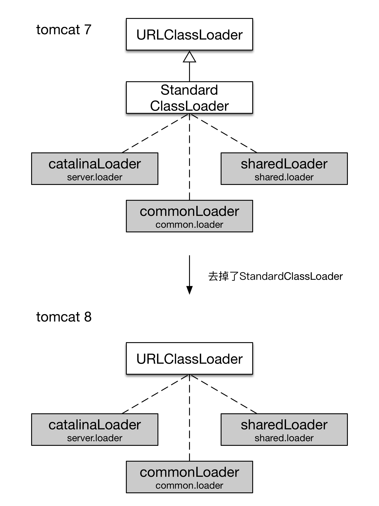</p>

      
    </div>
    <footer class="article-footer">
      
        <a data-url="https://danieldingzju.github.io/2016/01/29/开源tomcat类加载机制/" data-id="cjrzyxtd4000ls7buzukgcpka" class="article-share-link" data-share="baidu" data-title="开源tomcat类加载机制">分享到</a>
      

      

      
  <ul class="article-tag-list"><li class="article-tag-list-item"><a class="article-tag-list-link" href="/tags/Java/">Java</a></li></ul>

    </footer>
  </div>
  
</article>


  
    <article id="post-ASM" class="article article-type-post" itemscope="" itemprop="blogPost">
  <div class="article-meta">
    <a href="/2016/01/28/ASM/" class="article-date">
  <time datetime="2016-01-28T07:22:34.000Z" itemprop="datePublished">1月 28 2016</time>
</a>
    
  </div>
  <div class="article-inner">
    
    
      <header class="article-header">
        
  
    <h1 itemprop="name">
      <a class="article-title" href="/2016/01/28/ASM/">ASM</a>
    </h1>
  

      </header>
    
    <div class="article-entry" itemprop="articleBody">
      
        <p>ASM是个2002年就开始的项目，真是古老至极。许多流行且包含了动态代理功能的框架应该直接或者间接使用了asm（cglib是基于asm做的二次开发）。</p>
<p>在最近的项目中使用到了asm，所以做了一些小记，内容有翻译，有摘录，有总结。</p>
<h4 id="ASM_模型">ASM 模型</h4><p>ASM提供了两套API：</p>
<ul>
<li><p>core API : 提供 event-based 字节码控制。</p>
<p>  asm通过JVMS定义的字节码结构把字节码中的如field，method 声明，指令等变成event，然后操纵event以达成修改字节码的目的。</p>
<p>  相关主要类：ClassVisitor, MethodVisitor (4.0之前还有基于这两个类的如 ClassAdapter 类等)</p>
</li>
<li><p>tree API : 提供 tree-based 字节码控制</p>
<p>  基于event-based的模型，继续抽象了下，用一棵树的形式展现字节码。</p>
<p>  相关主要类：ClassNode, MethodNode</p>
</li>
</ul>
<p>在<a href="file:///Users/tingjieding/Dropbox/See%20my%20life%20here/%E5%AD%A6%E4%B9%A0%E8%B5%84%E6%96%99/asm4-guide.pdf" target="_blank" rel="noopener">此文</a>中就拿了SAX 和 DOM 来描述解析xml的比较 来 类比 core API 和 tree API 的比较：</p>
<ul>
<li><p>core API 比 tree API 占用更少的系统资源。从内存的角度看：tree API 由于要把字节码抽象成tree，在内存中会占用跟多的空间</p>
</li>
<li><p>core API 比 tree API 更难用，每次只能操作一个指令，需要非常了解字节码相关规范，写起来要小心翼翼。</p>
</li>
</ul>
<h4 id="ASM_架构">ASM 架构</h4><p>经典图如下：<br></p>
<p>使用了经典的 producer-consumer 模型，中间的白框都是filter。</p>
<pre><code><span class="comment">producer</span> <span class="literal">-</span><span class="literal">-</span>&gt; <span class="comment">filters</span> <span class="literal">-</span><span class="literal">-</span>&gt; <span class="comment">consumer:</span>
</code></pre><p>对于Class：</p>
<pre><code>ClassReader 是 producer，<span class="built_in">filter</span> 都是 ClassVisitor 的实现类，ClassWriter 作为 consumer。
</code></pre><p>对于Method：</p>
<pre><code>ClassReader 是 producer, <span class="built_in">filter</span> 是 MethodVistor 的实现类, MethodWriter 作为consumer。
</code></pre><p>对于Field：</p>
<pre><code>ClassReader 是 producer， <span class="built_in">filter</span> 是 FieldVistor 的实现类， FieldWriter 作为consumer。
</code></pre><h4 id="ASM_实例">ASM 实例</h4><p>添加System.out.println(“here I am”); 代码到方法中:</p>
<ul>
<li><p>core api使用方法如下：</p>
<pre><code>ClassReader cr <span class="subst">=</span> <span class="literal">new</span> ClassReader(<span class="built_in">bytes</span>);
ClassWriter cw <span class="subst">=</span> <span class="literal">new</span> ClassWriter(cr, COMPUTE_FRAMES <span class="subst">|</span> COMPUTE_MAXS); <span class="comment">//cr只是定义来源reader，无用。</span>
ClassVisitor cv <span class="subst">=</span> <span class="literal">new</span> ClassVisitor(Opcodes<span class="built_in">.</span>ASM5, cw){
    <span class="attribute">...</span><span class="built_in">.
</span>}
cr<span class="built_in">.</span>accept(cv, ClassReader<span class="built_in">.</span>EXPAND_FRAMES);                
<span class="keyword">return</span> cw<span class="built_in">.</span>toByteArray();

<span class="comment">//cr--&gt;cv--&gt;cw</span>
</code></pre></li>
<li><p>tree api使用方法如下：</p>
<pre><code><span class="type">ClassReader</span> cr = new <span class="type">ClassReader</span>(bytecode);
<span class="type">ClassNode</span> cn = new <span class="type">ClassNode</span>();
cr.accept(cn, <span class="type">ClassReader</span>.<span class="type">SKIP_DEBUG</span>);

<span class="type">List</span> methods = cn.methods;
<span class="keyword">for</span> (<span class="type">int</span> i = <span class="number">0</span>; i &lt; methods.size(); ++i) {
    <span class="type">MethodNode</span> <span class="keyword">method</span> = (<span class="type">MethodNode</span>) methods.get(i);
    <span class="keyword">if</span> (<span class="keyword">method</span>.instructions.size() &gt; <span class="number">0</span>) {                   instructions.insert(new <span class="type">FieldInsnNode</span>(<span class="type">Opcodes</span>.<span class="type">GETSTATIC</span>, <span class="string">"java/lang/System"</span>, <span class="string">"out"</span>, <span class="string">"Ljava/io/PrintStream;"</span>)); 
        instructions.insert(new <span class="type">LdcInsnNode</span>(<span class="string">"hi, here I am!"</span>));
        instructions.insert(new <span class="type">MethodInsnNode</span>(<span class="type">Opcodes</span>.<span class="type">INVOKEVIRTUAL</span>, <span class="string">"java/io/PrintStream"</span>, <span class="string">"println"</span>, <span class="string">"(Ljava/lang/String;)V"</span>, <span class="literal">false</span>))
    }
}
<span class="type">ClassWriter</span> cw = new <span class="type">ClassWriter</span>(<span class="type">COMPUTE_FRAMES</span> | <span class="type">COMPUTE_MAXS</span>);
cn.accept(c);
<span class="keyword">return</span> cw.toByteArray();

//cr--&gt;cn--&gt;cw
</code></pre></li>
</ul>
<p>PS：推荐在IDE上面安装<a href="https://plugins.jetbrains.com/plugin/5918?pr=idea" target="_blank" rel="noopener">ASM字节码工具</a>，在一个正常类里面写完代码以后，用工具一转，可以参考转出的字节码，开始写asm相关代码了。</p>
<h3 id="ASM其他">ASM其他</h3><h4 id="ASM_core_api">ASM core api</h4><ul>
<li><p>TraceClassVisitor:</p>
<p>  通过 <strong>PrintWriter</strong> 实例打印可读的字节码信息。</p>
</li>
<li><p>CheckClassAdapter</p>
<p>  在被JVM拒绝之前检测修改后的字节码是否合法。</p>
</li>
<li><p>AnalyzerAdapter</p>
<p>  可以自动计算stack的深度，感觉没太大作用，在ClassWriter的option里面有两个选项：<strong>COMPUTE_FRAMES, COMPUTE_MAXS</strong></p>
</li>
<li><p>LocalVariablesSorter</p>
<p>  有newLocal方法可以添加local variable，自动维护local variable数量变化，引起的local variable对应的index变化的问题。</p>
</li>
<li><p>AdviceAdapter</p>
<p>  有onMethodEnter()和onMethodExit()方法，可以在方法最开始和RETURN 或者 ATHROW指令之前插入指令。</p>
</li>
</ul>
<p>Metadata 相关 vistor：SignatureVisitor， AnnotationVisitor。这两个还没有用过，暂做记录。</p>
<h4 id="ASM_tree_api">ASM tree api</h4><p>实际使用的时候，碰到了问题，没有细看，暂做记录。</p>

      
    </div>
    <footer class="article-footer">
      
        <a data-url="https://danieldingzju.github.io/2016/01/28/ASM/" data-id="cjrzyxtcj0000s7buu46lzgvi" class="article-share-link" data-share="baidu" data-title="ASM">分享到</a>
      

      

      
  <ul class="article-tag-list"><li class="article-tag-list-item"><a class="article-tag-list-link" href="/tags/Java/">Java</a></li></ul>

    </footer>
  </div>
  
</article>


  
    <article id="post-Zero-Copy" class="article article-type-post" itemscope="" itemprop="blogPost">
  <div class="article-meta">
    <a href="/2016/01/19/Zero-Copy/" class="article-date">
  <time datetime="2016-01-19T03:51:02.000Z" itemprop="datePublished">1月 19 2016</time>
</a>
    
  </div>
  <div class="article-inner">
    
    
      <header class="article-header">
        
  
    <h1 itemprop="name">
      <a class="article-title" href="/2016/01/19/Zero-Copy/">Zero Copy</a>
    </h1>
  

      </header>
    
    <div class="article-entry" itemprop="articleBody">
      
        <p>xflush，metaq都适用了zero copy技术来提高性能，多次看到这个词，却一直没有理解透彻，于是找了一些资料了解。以下此技术点知识的翻译及汇总。</p>
<p>翻译自<a href="http://www.linuxjournal.com/article/6345" target="_blank" rel="noopener">这里</a></p>
<p>到目前为止几乎所有的人都听说过linux下的所谓的zero-copy，但是我还是经常碰到不能完全理解这个内容的人。 基于此，我打算写一些文章深挖，剖析一下这个有用的功能。在这个文章里面，我们从user-mode（用户模式）应用这个角度来看下zero copy， 所以更详尽的kernel-level（内核）细节会被有意的忽略。</p>
<h4 id="What_is_Zero-Copy?">What is Zero-Copy?</h4><p>为了更好的理解一个问题的解决方案，我们首先需要的是理解问题本身。让我们了解下网络服务器进程（？network server dæmon ）为client端提供数据存储在文件中的服务的简单过程中包含了什么。一下是实例代码：</p>
<pre><code><span class="keyword">read</span>(<span class="keyword">file</span>, tmp_buf, <span class="built_in">len</span>);

<span class="keyword">write</span>(socket, tmp_buf, <span class="built_in">len</span>);
</code></pre><p>看起来非常简单；你可能会想里面最多也就两个系统调用（system calls）。事实上，实时也就是如此。在这两次调用之后，数据（data）已经被复制了最少四次，同时执行了相同次数的 user/kernel mode上下文切换 。（事实上这个过程比这个描述的更复杂）。为了更深入的理解这个过程，请看图1。上半部展示了user/kernel mode上下文切换，并且下半部展示了复制操作。</p>
<p></p>
<ul>
<li><p>第一步：读系统调用（read system call）引起了从user mode to kernel mode 的上下文切换。第一次的copy被DMA engine执行，它从磁盘中读取了文件的内容然后存储到kernel address space buffer 里面。</p>
</li>
<li><p>第二步：第二次的copy是数据从kernel buffer 复制到 user buffer，然后读系统调用（read system call）返回。这个 返回 引起了从 kernel mode 变回 user mode 的上下文切换。现在数据被存在了user address space buffer了。</p>
</li>
<li><p>第三步：写系统调用（write system call）引起了从user mode to kernel mode。第三次copy是为了把再次把数据放入到kernel address space buffer。这次数据被放在了不同的buffer，是跟sockets相关的buffer。</p>
</li>
<li><p>第四步：写系统调用（write system call）返回，创建了我们的第四次的上下文切换。异步且于之前不依赖（Independently and asynchronously）的情况下，第四次是在DMA engine 从kernel buffer 复制 到 protocol engine的时候发生的。你可能问自己，“什么是 Independently and asynchronously？ 数据难道不是在调用返回之前就完成数据传输的么？” 事实上，调用返回 步保证 输入传输完成；它甚至步保证数据开始传输。 它只是意味着网卡驱动在其处理队列中有清空的描述符（？free descriptors）并且接收了我们需要传输的数据。这个时候在网卡的处理队列中可能还有很多的数据包在我们的数据之前。除非驱动／硬件实现了优先级环活着队列，不然数据在处理队列中都是按照先进先出的方式传输的。（带分叉的DMA 复制 表示了最后的复制能够被延迟）。</p>
</li>
</ul>
<p>正如你所看到的， 以上过程有很多的数据复制是不必要的。其中一部分复制是可以消除来减少资源浪费以提高性能的。 作为一个驱动开发者， 我在一些有非常先进功能的硬件上面工作过。有些硬件能够绕过主存直接传送数据到另外一个设备。这个功能能够减少系统内存中的数据冗余，非常值得拥有，但是不是所有的硬件都是支持的。可能还会存在额外的数据问题会引入一定的复杂性：来源于disk的数据需要repackage才能发送给网卡。 为了减少资源浪费， 我们可以从减少kernel buffers和 user buffers之间的数据复制。</p>
<p>减少一次复制的一种方法是跳过调用 read 而用 调用 mmap 来替代。举例来说：</p>
<pre><code>tmp_buf = mmp(<span class="keyword">file</span>, <span class="built_in">len</span>);
<span class="keyword">write</span>(socket, tmp_buf, <span class="built_in">len</span>);
</code></pre><p>为了更好的了解这个过程，请看下图 2. Context switches（上下文切换）仍然一样。<br></p>
<ul>
<li><p>第一步：mmap 系统调用通过DMA engine复制到kernel buffer。这个buffer之后会被user process（用户京城）共享使用，而不需要在kernel memory space 和 user memory sapce之间执行数据的复制。</p>
</li>
<li><p>第二步：写系统调用让kernal 把之前的 kernel buffer中的数据传输到 socket相关的kernel buffer。</p>
</li>
<li><p>第三步：第三次数据复制发生在 DMA engine 传输数据从 kernel socket buffers 到protocal engine。</p>
</li>
</ul>
<p>通过使用mmap来替代read，我们已经减少了一半的kernel不得步复制的次数。在大量数据需要传输的时候，这种方式带来了很好的结果。然而，这种提升不是没有代价的；这种使用mmap＋write方法的方式会存在隐藏的陷阱。其中一种情况是党你正在使用mmap（memory map）读取文件的时候并且已经调用了write操作 的时候，另外一个线程删减了文件的部分内容。你的write system call 就会被bus error（signal SIGBUS）打断，因为你执行了一个次有问题的内存访问。这个signal的默认行为就是杀死对应的进程和dump core－－但对网络服务器无法记全所有希望了解的操作。有两种方式能够解决这个问题。</p>
<ul>
<li><p>第一种解决方案是为 SIGBUS signal 添加singal handler，然后handler只要简单的return逻辑就可以了。通过这种方式，write system call 会返回在它被中断前要写的字节流并且errno会被设置成success。这种方式在我看来是一种不好的解决方案，只是一种处理了表层症状而不是问题的根本的方式。因为SIGBUS signals 有时候说明了进程出现了非常严重的问题，但现在却被屏蔽了，所以不推荐使用这种方案。</p>
</li>
<li><p>第二种解决方案使用了 kernel 的file leasing[文件租约]（在Microsoft Windows里面叫做“opportunistic locking”）。我认为这是一种解决这个问题的正确方法。通过在文件描述符(file descriptor)续约(leasing)，你可以在kernel中获得某个具体文件的租约(lease)。紧接着你可以在kernel中请求一次读／写租约(lease)。当另一个进程尝试着删减(修改)你正在传输的文件内容的时候，kernel会发送给你一个实时的signal，RT_SIGNAL_LEASE signal。它告诉你kernel正在打断你在某个文件上面的读／写租约。你的write system call会在你的程序访问非法地址和北SIGBUS signal杀掉之前就被中断。write system call 返回的数据是中断之间将要卸乳的字节流数据，并且errno 会被设置成 success。一下是从kernel获得租约的事例代码：</p>
<pre><code><span class="keyword">if</span>(fcntl(fd, F_SETSIG, RT_SIGNAL_LEASE) == -<span class="number">1</span>) {
    perror(<span class="string">"kernel lease set signal"</span>);
    <span class="built_in">return</span> -<span class="number">1</span>;
}
/* l_<span class="built_in">type</span> can be F_RDLCK F_WRLCK */
<span class="keyword">if</span>(fcntl(fd, F_SETLEASE, l_<span class="built_in">type</span>)){
    perror(<span class="string">"kernel lease set type"</span>);
    <span class="built_in">return</span> -<span class="number">1</span>;
}
</code></pre><p>你需要在 mmap 文件之前获得租约，然后在你完成逻辑之后解除租约。解除租约可以通过调用 fcntl F_SETLEASE with the lease type of F_UNLCK 来完成。</p>
</li>
</ul>
<p>在kerverl version 2.1, the sendfile system call 被添加来简化网络内机器之间或一台机器本地文件之间的数据传输。 sendfile 不但能减少数据的复制，还能减少context switches(kernel， user)，是按照如下方式使用的：</p>
<pre><code>sendfile(<span class="keyword">socket</span>, <span class="keyword">file</span>, len);
</code></pre><p>为了更好的理解这个过程，请看图3.<br></p>
<ul>
<li><p>第一步：sendfile system call 把文件的数据通过DMA engine 复制到kernel buffer里面。然后数据通过kernel复制到sockets相关的kernel buffer里面。</p>
</li>
<li><p>第二步：第三次的复制是当DMA engine 从kernel socket buffers中数据传送数据到protocal engine中。</p>
</li>
</ul>
<p>你可能会想当另外一个线程删减这个我们正在使用sendfile system call 来传输的文件的时候会发生什么。如果我们没有注册任何signal handlers（信号量处理器），sendfile call 会返回被中断之前将要传输的字节流，并且errno会被设置为sucess状态。</p>
<p>如果我们在调用sendfile之前通过kernel获得获得文件的租约，那么之后的行为和返回状态就和之前描述的一样。我们也会在sendfile call 返回之前得到RT_SIGNAL_LEASE信号量。</p>
<p>到现在位置，我们已经能够减少若干次kernel发生的数据复制了，但是我们仍然留下了一次复制。那么是否那次复制也能避免？当然可以，只要通过一些硬件的帮助。为了消除所有通过kernel完成的数据复制，我们需要网卡支持gather(聚合) operations。简单理解就是等在等待被传输的数据不需要在连续的内存中；他们能够被存储在不同的内存位置。在内部版本2.4，socket buffer discriptor为了适应这些需求而做了修改－－这就是Linux的zero copy。这个方法不但减少多次的context switches，而且它减少processors(处理器)完成的多次数据复制。对于user-level的应用什么都不需要改变，代码仍然如下：</p>
<pre><code>sendfile(<span class="keyword">socket</span>, <span class="keyword">file</span>, len);
</code></pre><p>为了能够更深入的理解这个过程，请看图4.<br></p>
<ul>
<li><p>第一步：the sendfile system call 通过DMA engine复制数据内容至kernel buffer。</p>
</li>
<li><p>第二步：没有数据被复制到socket buffer。只有包含数据的 whereabouts（内存地址信息？）和长度信息的descriptors(描述符号)才被添加到socket buffer。The DMA engine 直接把数据从kernel buffer 传递到 protocol engine，所以消除了剩余最后的数据复制。</p>
</li>
</ul>
<p>因为数据实际上仍然从disk复制到了memory并且之后从memory到了wire，有人可能会说这个不是真正的 zero copy。 之前所描述的是 操作系统角度 的zero copy，因为数据没有在kernel buffers之间被复制。当使用zero copy的时候，能得到除了避免数据复制之外的性能提升，例如更少的context switches，更少的CPU data cache pollution（cpu 数据缓存污染，不需要修改cpu的缓存内容？）和 no CPU checksum calculations（这个是什么？）</p>
<h4 id="How_to_use_Zero-Copy?">How to use Zero-Copy?</h4><p>现在我们知道了什么是zero copy，让我们实践下理论并且写一些代码吧。</p>
<p>C的代码参考<a href="http://www.linuxjournal.com/article/6345" target="_blank" rel="noopener">这里</a></p>
<p>以下为JAVA中如何完成zero copy，只要使用api：</p>
<pre><code>java.nio.channel.FileChannel的transferTo(<span class="keyword">long</span> position, <span class="keyword">long</span> count, WritableByteChannel <span class="keyword">target</span>) <span class="keyword">throws</span> IOException;
</code></pre><p>来自<a href="">参考</a>的性能数据：</p>
<table>
<thead>
<tr>
<th>File size</th>
<th>Normal file transfer (ms)</th>
<th>transferTo (ms)</th>
</tr>
</thead>
<tbody>
<tr>
<td>7MB</td>
<td>156</td>
<td>45</td>
</tr>
<tr>
<td>21MB</td>
<td>337</td>
<td>128</td>
</tr>
<tr>
<td>63MB</td>
<td>843</td>
<td>387</td>
</tr>
<tr>
<td>98MB</td>
<td>1320</td>
<td>617</td>
</tr>
<tr>
<td>200MB</td>
<td>2124</td>
<td>1150</td>
</tr>
<tr>
<td>350MB</td>
<td>3631</td>
<td>1762</td>
</tr>
<tr>
<td>700MB</td>
<td>13498</td>
<td>4422</td>
</tr>
<tr>
<td>1GB</td>
<td>18399</td>
<td>8537</td>
</tr>
</tbody>
</table>

      
    </div>
    <footer class="article-footer">
      
        <a data-url="https://danieldingzju.github.io/2016/01/19/Zero-Copy/" data-id="cjrzyxtd0000es7bucz61sed2" class="article-share-link" data-share="baidu" data-title="Zero Copy">分享到</a>
      

      

      
  <ul class="article-tag-list"><li class="article-tag-list-item"><a class="article-tag-list-link" href="/tags/Linux/">Linux</a></li></ul>

    </footer>
  </div>
  
</article>


  
    <article id="post-认识java-agent" class="article article-type-post" itemscope="" itemprop="blogPost">
  <div class="article-meta">
    <a href="/2015/12/26/认识java-agent/" class="article-date">
  <time datetime="2015-12-26T14:25:02.000Z" itemprop="datePublished">12月 26 2015</time>
</a>
    
  </div>
  <div class="article-inner">
    
    
      <header class="article-header">
        
  
    <h1 itemprop="name">
      <a class="article-title" href="/2015/12/26/认识java-agent/">认识java agent</a>
    </h1>
  

      </header>
    
    <div class="article-entry" itemprop="articleBody">
      
        <h4 id="java_agent">java agent</h4><h6 id="agent">agent</h6><p>java agent是在JDK1.5之后引入的，是main方法之前的拦截器；其作用是在main之前之前执行agent中的逻辑。</p>
<p>假设 A 是主要业务逻辑应用所在进程； B 是要拦截在A的main方法之前的 agent。</p>
<p>那么agent有两种启动方式：</p>
<ul>
<li><p>（1）B在A之前启动：通过 启动A时添加vm参数 -javaagent:xxxx.jar</p>
<p>  a. xxxx.jar包含了自己实现的agent类，实现规范中一种形式如下：</p>
<pre><code><span class="keyword">public</span> <span class="keyword">static</span> <span class="function"><span class="keyword">void</span> <span class="title">premain</span><span class="params">(String agentOps, Instrumentation inst)</span></span>{  
    <span class="comment">//TODO </span>
}
</code></pre><p>  b. xxxx.jar包含的资源配置文件Manifest中需要指明premain所在的类：</p>
<pre><code>Premain-Class: com<span class="class">.mypackage</span><span class="class">.MyAgent</span>
</code></pre></li>
</ul>
<ul>
<li><p>（2）B在A之后启动：通过 VirtualMachine 的 attach 和 loadAgent 方法实现。</p>
<p>  VirtualMachine类所在包为：com.sun.tools.attach；相关代码：</p>
<pre><code><span class="keyword">try</span>{
    <span class="built_in">String</span> pid = fetchPidId(); <span class="comment">//获取到java 的 pid（各种方式）</span>
    <span class="keyword">if</span>( pid != <span class="keyword">null</span> ){
        vm = VirtualMachine.attach( pid );    <span class="comment">// 获取attach到的vm对象实例                                 </span>
        vm.loadAgent(agentJarFilePath, args); <span class="comment">// 加载agent</span>
    }
}<span class="keyword">finally</span> {
    vm.detach();
}
</code></pre><p>  a. agentJarFilePath包含了自己实现的agent类，实现规范中一种形式如下：</p>
<pre><code><span class="keyword">public</span> <span class="keyword">static</span> <span class="function"><span class="keyword">void</span> <span class="title">agentmain</span><span class="params">(String args, Instrumentation inst)</span> </span>{
    <span class="comment">//TODO</span>
}
</code></pre><p>  b. agentJarFilePath包含了资源配置文件Manifest中需要指明agentmain所在的类：</p>
<pre><code><span class="attribute">Agent-Class</span>: <span class="string">war.Hatch</span>
</code></pre></li>
</ul>
<p><strong><em>tips</em></strong>：<br>资源描述文件Manifest里面agent相关的额外配置项如下：</p>
<ul>
<li><p>Can-Redefine-Classes</p>
<p>  如果此值为true，可以修改已经加载的class的字节码。</p>
</li>
<li><p>Can-Retransform-Classes  </p>
<p>  如果此值为true，表示支持重复修改class的字节码。这个和redefine的区别是，transform只是一个filter，没有修改本源字节码。</p>
</li>
</ul>
<h6 id="instrument">instrument</h6><p>在<strong>agent</strong>介绍中，我们可以看到instrument的身影，用来增强字节码。</p>
<p>instrument中可以：</p>
<pre><code><span class="number">1.</span> 在 A 所在的JVM进程的BootstrapClassLoader 或者 SystemClassLoader（AppClassLoader）中加载额外的jar包。
<span class="number">2.</span> 可以获得 A 中已经加载的所有的<span class="class"><span class="keyword">class</span>类。</span>
<span class="number">3.</span> 可以添加 ClassFileTransformer 类来进行<span class="class"><span class="keyword">class</span>文件（字节码）的修改。</span>
    instrument.add
</code></pre><p>更多请参考API。<a href="http://www.chinaxing.org/articles/Java/2014/09/25/2014-09-24-instrumentation.html" target="_blank" rel="noopener">这里</a>有一篇比较好的理解，强烈推荐。</p>
<h6 id="实践经验">实践经验</h6><ul>
<li><p>因为com.sun.tools.attach.VirtualMachine在tools.jar中，所以在（2）情况下要调用其attach和loadAgent的时候，需要在classpath中添加tools.jar。形如：</p>
<pre><code>java -<span class="keyword">classpath</span> {JAVA_HOME}<span class="regexp">/lib/</span>tools.jar:myTransport.jar Transport
</code></pre><p>  Transport 中的main方法包含了（2）中的示例代码。</p>
</li>
<li><p>加入是用maven打包的推荐使用 maven-assembly-plugin，用其<manifestentries>来管理资源管理文件配置项，示例配置如下：</manifestentries></p>
<pre><code><span class="tag">&lt;<span class="title">manifestEntries</span>&gt;</span>
    <span class="tag">&lt;<span class="title">Premain-Class</span>&gt;</span>agent<span class="tag">&lt;/<span class="title">Premain-Class</span>&gt;</span>
    <span class="tag">&lt;<span class="title">Agent-Class</span>&gt;</span>agent<span class="tag">&lt;/<span class="title">Agent-Class</span>&gt;</span>
    <span class="tag">&lt;<span class="title">Can-Redine-Classes</span>&gt;</span>true<span class="tag">&lt;/<span class="title">Can-Redine-Classes</span>&gt;</span>
    <span class="tag">&lt;<span class="title">Can-Retransform-Classes</span>&gt;</span>true<span class="tag">&lt;/<span class="title">Can-Retransform-Classes</span>&gt;</span>
<span class="tag">&lt;/<span class="title">manifestEntries</span>&gt;</span>
</code></pre></li>
<li><p>获取PID的示例命令：</p>
<pre><code>ps ax | grep <span class="string">'java'</span> | cut <span class="operator">-d</span> <span class="string">" "</span> <span class="operator">-f</span>2
</code></pre></li>
</ul>
<h6 id="agent技术已知商业价值">agent技术已知商业价值</h6><ul>
<li>性能剖析：Btrace</li>
<li>错误诊断：Btrace， Greys</li>
<li>AOP切面技术：Spring</li>
</ul>

      
    </div>
    <footer class="article-footer">
      
        <a data-url="https://danieldingzju.github.io/2015/12/26/认识java-agent/" data-id="cjrzyxtda000xs7buun9isbuu" class="article-share-link" data-share="baidu" data-title="认识java agent">分享到</a>
      

      

      
  <ul class="article-tag-list"><li class="article-tag-list-item"><a class="article-tag-list-link" href="/tags/Java/">Java</a></li></ul>

    </footer>
  </div>
  
</article>


  
  
    <nav id="page-nav">
      <span class="page-number current">1</span><a class="page-number" href="/page/2/">2</a><a class="extend next" rel="next" href="/page/2/">Next &raquo;</a>
    </nav>
  
</section>
      
      <aside id="sidebar">
  
    
  
    
  <div class="widget-wrap">
    <h3 class="widget-title">标签</h3>
    <div class="widget">
      <ul class="tag-list"><li class="tag-list-item"><a class="tag-list-link" href="/tags/Java/">Java</a><span class="tag-list-count">11</span></li><li class="tag-list-item"><a class="tag-list-link" href="/tags/Life/">Life</a><span class="tag-list-count">1</span></li><li class="tag-list-item"><a class="tag-list-link" href="/tags/Linux/">Linux</a><span class="tag-list-count">2</span></li><li class="tag-list-item"><a class="tag-list-link" href="/tags/problem/">problem</a><span class="tag-list-count">2</span></li></ul>
    </div>
  </div>

  
    
  <div class="widget-wrap">
    <h3 class="widget-title">标签云</h3>
    <div class="widget tagcloud">
      <a href="/tags/Java/" style="font-size: 20px;">Java</a> <a href="/tags/Life/" style="font-size: 10px;">Life</a> <a href="/tags/Linux/" style="font-size: 15px;">Linux</a> <a href="/tags/problem/" style="font-size: 15px;">problem</a>
    </div>
  </div>

  
    
  <div class="widget-wrap">
    <h3 class="widget-title">归档</h3>
    <div class="widget">
      <ul class="archive-list"><li class="archive-list-item"><a class="archive-list-link" href="/archives/2019/02/">二月 2019</a><span class="archive-list-count">1</span></li><li class="archive-list-item"><a class="archive-list-link" href="/archives/2017/12/">十二月 2017</a><span class="archive-list-count">1</span></li><li class="archive-list-item"><a class="archive-list-link" href="/archives/2016/12/">十二月 2016</a><span class="archive-list-count">2</span></li><li class="archive-list-item"><a class="archive-list-link" href="/archives/2016/09/">九月 2016</a><span class="archive-list-count">1</span></li><li class="archive-list-item"><a class="archive-list-link" href="/archives/2016/02/">二月 2016</a><span class="archive-list-count">1</span></li><li class="archive-list-item"><a class="archive-list-link" href="/archives/2016/01/">一月 2016</a><span class="archive-list-count">3</span></li><li class="archive-list-item"><a class="archive-list-link" href="/archives/2015/12/">十二月 2015</a><span class="archive-list-count">2</span></li><li class="archive-list-item"><a class="archive-list-link" href="/archives/2015/11/">十一月 2015</a><span class="archive-list-count">1</span></li><li class="archive-list-item"><a class="archive-list-link" href="/archives/2015/10/">十月 2015</a><span class="archive-list-count">1</span></li><li class="archive-list-item"><a class="archive-list-link" href="/archives/2015/09/">九月 2015</a><span class="archive-list-count">1</span></li><li class="archive-list-item"><a class="archive-list-link" href="/archives/2015/04/">四月 2015</a><span class="archive-list-count">2</span></li></ul>
    </div>
  </div>

  
    
  <div class="widget-wrap">
    <h3 class="widget-title">近期文章</h3>
    <div class="widget">
      <ul>
        
          <li>
            <a href="/2019/02/02/LinkageError-排查过程/">LinkageError 排查过程</a>
          </li>
        
          <li>
            <a href="/2017/12/11/Metaspace-OOM/">fastjson引发的oom事件</a>
          </li>
        
          <li>
            <a href="/2016/12/09/hdfs-case-one/">hdfs-case-one</a>
          </li>
        
          <li>
            <a href="/2016/12/09/zeppelin-case-one/">zeppelin-case-one</a>
          </li>
        
          <li>
            <a href="/2016/09/27/hacking-phoenix/">hacking phoenix</a>
          </li>
        
      </ul>
    </div>
  </div>

  
    
  <div class="widget-wrap">
    <h3 class="widget-title">友情链接</h3>
    <div class="widget">
      <ul>
        
          <li>
            <a href="http://xiguabaobao.com" target="_blank">主题作者</a>
          </li>
        
          <li>
            <a href="http://reqianduan.com" target="_blank">热前端</a>
          </li>
        
      </ul>
    </div>
  </div>

  
</aside>
      
    </div>
    <footer id="footer">
  
  <div class="outer">
    <div id="footer-info" class="inner">
      &copy; 2019 danielding<br>
      Powered by <a href="http://hexo.io/" target="_blank">Hexo</a>
      .
      Theme by <a href="https://github.com/xiangming/landscape-plus" target="_blank">Landscape-plus</a>
    </div>
  </div>
</footer>
  </div>
  <nav id="mobile-nav">
  
    <a href="/" class="mobile-nav-link">Home</a>
  
    <a href="/archives" class="mobile-nav-link">Archives</a>
  
</nav>
  <!-- totop start -->
<div id="totop">
<a title="返回顶部"></a>
</div>

<!-- totop end -->


<!-- 百度分享 start -->

<div id="article-share-box" class="article-share-box">
  <div id="bdshare" class="bdsharebuttonbox article-share-links">
    <a class="article-share-weibo" data-cmd="tsina" title="分享到新浪微博"></a>
    <a class="article-share-weixin" data-cmd="weixin" title="分享到微信"></a>
    <a class="article-share-qq" data-cmd="sqq" title="分享到QQ"></a>
    <a class="article-share-renren" data-cmd="renren" title="分享到人人网"></a>
    <a class="article-share-more" data-cmd="more" title="更多"></a>
  </div>
</div>
<script>
  function SetShareData(cmd, config) {
    if (shareDataTitle && shareDataUrl) {
      config.bdText = shareDataTitle;
      config.bdUrl = shareDataUrl;
    }
    return config;
  }
  window._bd_share_config={
    "common":{onBeforeClick: SetShareData},
    "share":{"bdCustomStyle":"/css/bdshare.css"}
  };
  with(document)0[(getElementsByTagName('head')[0]||body).appendChild(createElement('script')).src='http://bdimg.share.baidu.com/static/api/js/share.js?cdnversion='+~(-new Date()/36e5)];
</script>

<!-- 百度分享 end -->

<script src="//cdnjs.cloudflare.com/ajax/libs/jquery/1.11.1/jquery.min.js"></script>


<! -- mathjax config similar to math.stackexchange -->

<script type="text/x-mathjax-config">
MathJax.Hub.Config({
tex2jax: {
          inlineMath: [ ['$$$','$$$'] ],
                processEscapes: true
                    
}
  
        });
</script>

<script type="text/x-mathjax-config">
MathJax.Hub.Config({
tex2jax: {
            skipTags: ['script', 'noscript', 'style', 'textarea', 'pre', 'code']
                  
}
    
        });
</script>

<script type="text/x-mathjax-config">
MathJax.Hub.Queue(function() {
            var all = MathJax.Hub.getAllJax(), i;
            for(i=0; i < all.length; i += 1) {
                            all[i].SourceElement().parentNode.className += ' has-jax';
                                    
            }
                
        });
</script>

<script type="text/javascript" src="http://cdn.bootcss.com/mathjax/2.5.3/MathJax.js?config=TeX-AMS-MML_HTMLorMML">
</script>


<script src="/js/script.js"></script>

</div>
</body>
</html>
